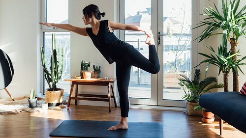

Todo lo que debes saber sobre el YOGA
Beneficios de practicar YOGA
Practicar Yoga ayuda a reducir la presión arterial y la frecuencia cardíaca, ayuda a relajarse, a dormir mejor, mejora la confianza en uno mismo, aumenta la coordinación y la concentración, ayuda a reducir el estrés, entre otros beneficios.
Crea tu propio espacio
Encontra un espacio para despejar la mente y conectar con la energía espiritual, puede ser el dormitorio o una sala de estar tranquila. Asegurate que los colores del ambiente sean suaves, ya que invitan a la calma. Agarra el mat, deja que las energías fluyan y disfruta del momento.

Porque escuchar musica durante la practica?
La combinación de música y yoga nos puede ayudar a la inspiración y la concentración. Una buena eleccion de musica, puede aportarnos mayor facilidad para dejar la mente en blanco y por tanto una mayor capacidad para la meditación al final. Ademas puede aumentar el efecto relajante, calmante y anti-estrés.
Recomendaciones antes de empezar cada clase
Antes de comenzar una clase, asegurate de tener ropa ligera y cómoda. Evita comer antes de la clase, al menos 1 o 2 horas antes.
Es importante tener un Mat o alguna manta que no se deslice, para evitar caídas y que ofrezca amortiguación en los puntos de apoyo.